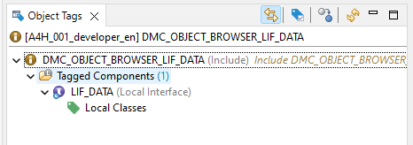
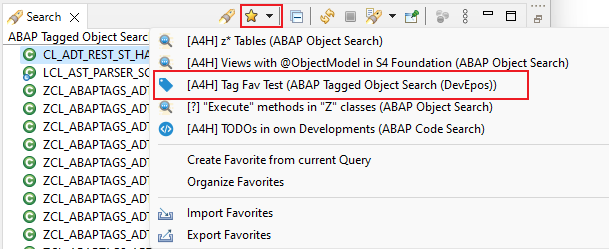
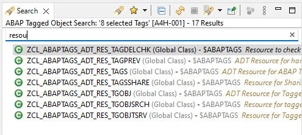

Local Classes/Interfaces of Programs, Program Includes, Function Group Includes and Functions can now be
tagged as well

Example of tagged local interface in Program Include
For this feature you have to install at least Version v2.4.0
of the ADT Backend abap-tags-backend
Object deletion is now possible from Tagged Object Trees (in Project Explorer View)
Fixes
Tag removal from local components via Tagged Object Trees (in Project Explorer View)
ABAP Tagged Object Search
Features
New unified Search Favorites (More Information)

New Search Favorites
Text Filter possibility for Search Result View

Text Filter for Search Result Viewer